1. Màquina virtual, instal·lació i particions
Una màquina virtual és un ordinador simulat que funciona dins del sistema real. En aquest apartat es detalla la creació d'una màquina virtual a VirtualBox, la instal·lació de Windows 10 i la distribució del disc en diferents particions.
Creació de la màquina virtual
Es crea una màquina virtual anomenada Windows-NomCognom configurada amb 4 GB de memòria RAM i un disc dur virtual de 50 GB.
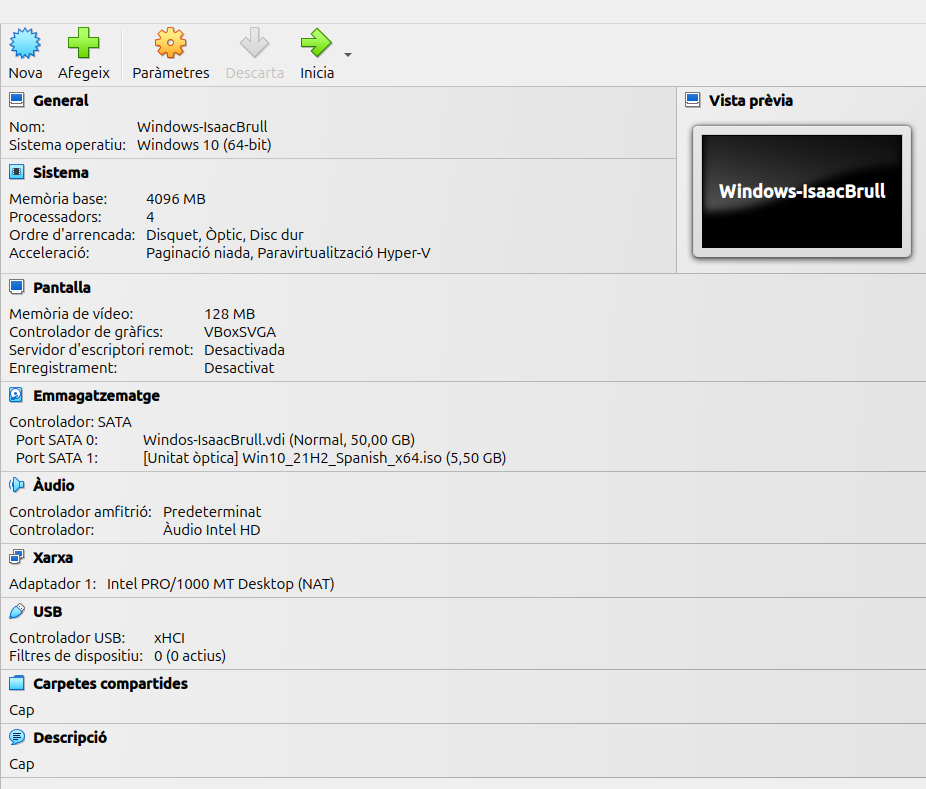
Configuració de xarxa inicial
A la configuració de xarxa de la màquina virtual es comprova que l'Adaptador 1 està habilitat i en mode NAT per defecte.
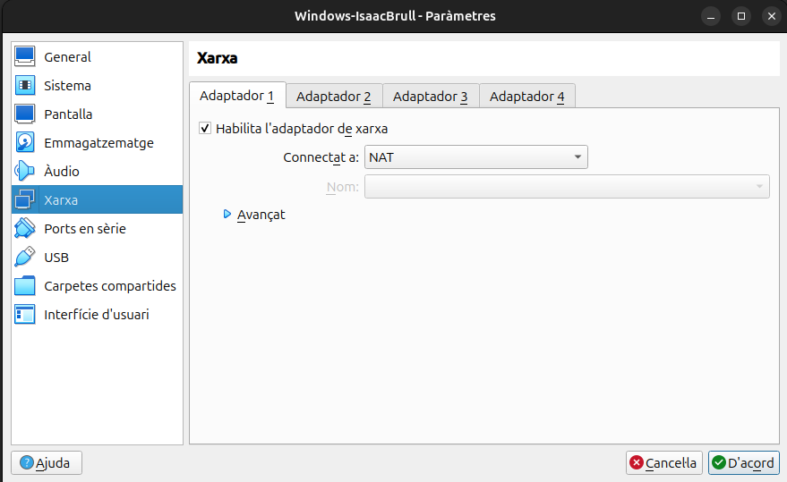
Instal·lació i particionat del disc
Es carrega la imatge ISO de Windows 10 i s'inicia la instal·lació. A la pantalla de particions es crea una partició de 30 GB per al sistema Windows i es deixen 20 GB sense assignar per utilitzar posteriorment.
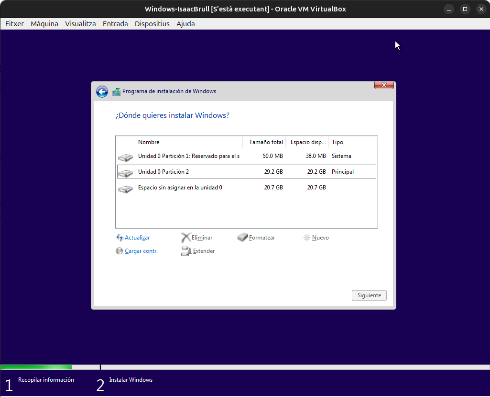
Creació de la partició DADES (D:)
Un cop completada la instal·lació i arrencat el sistema, s'obre l'Eina d'Administració de discs (diskmgmt.msc). Amb l'espai no assignat de 20 GB es crea un volum simple NTFS amb la lletra D: i el nom de volum DADES.
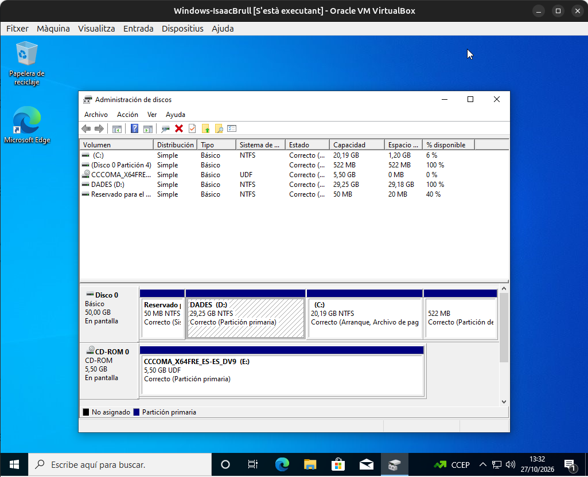
↑ Tornar a l'índex
2. Llicències
Per utilitzar Windows de forma legal cal comptar amb una llicència activada. En aquest apartat es comprova l'estat d'activació del sistema i s'analitzen els diferents tipus de llicències (Retail, OEM, Volum i CAL).
Estat d'activació del sistema
Accedint a Configuració → Sistema → Activació es consulta l'edició exacta de Windows instal·lada i el seu estat d'activació actual.
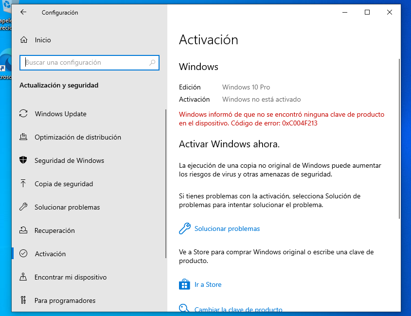
Consultes amb la línia de comandes
Des del Símbol del sistema (cmd) s'executen les ordres slmgr /xpr per veure la data de caducitat de l'activació i slmgr /dli per obtenir els detalls del tipus de llicència.
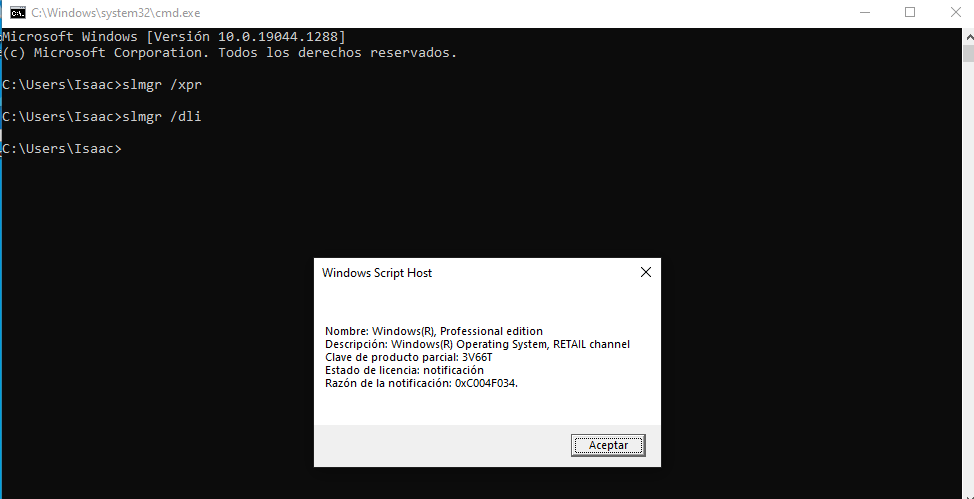
Comparativa de preus
S'efectua una cerca del cost oficial de Windows 11 Home i Pro a la botiga oficial de Microsoft i es compara amb distribuïdors autoritzats de tercers.
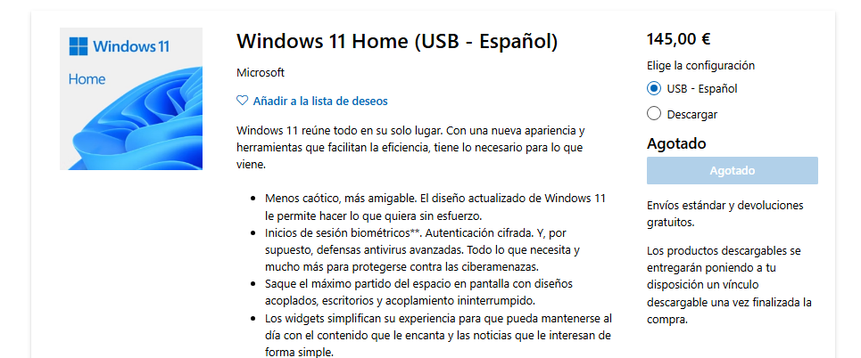
Llicències CAL (Client Access License)
S'investiga el concepte de llicència CAL a la documentació oficial de Microsoft. Aquest tipus de llicència és necessària perquè els usuaris o equips puguin accedir als serveis d'un servidor Windows Server.
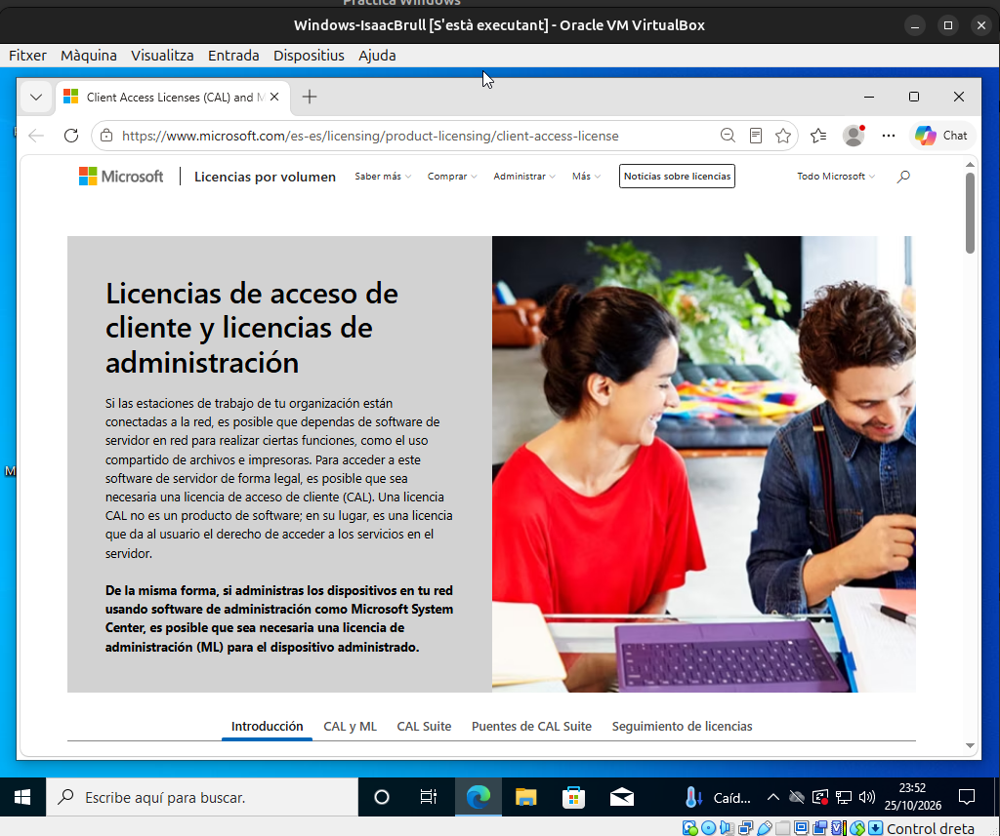
↑ Tornar a l'índex
3. Comandes bàsiques
La línia de comandes (CMD) permet administrar el sistema operatiu escrivint ordres de manera ràpida i eficaç. A continuació es detalla la seqüència de comandes executades.
-
Creació de directori de treball:
Entrem a l'Escriptori amb cd Desktop, creem una carpeta de treball amb mkdir practica i accedim amb cd practica.
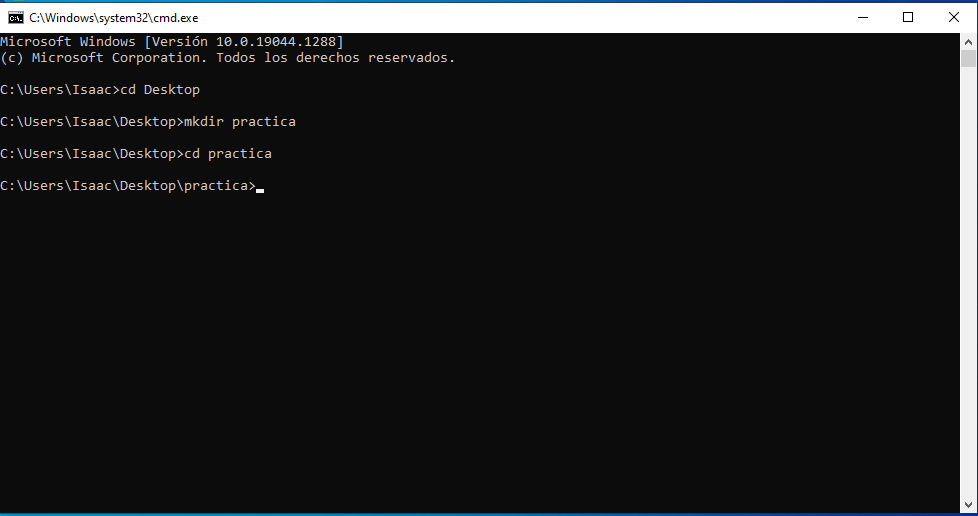
-
Creació de fitxer de text:
Generem un fitxer amb la comanda echo hola > nota.txt i verifiquem la seva existència amb dir.
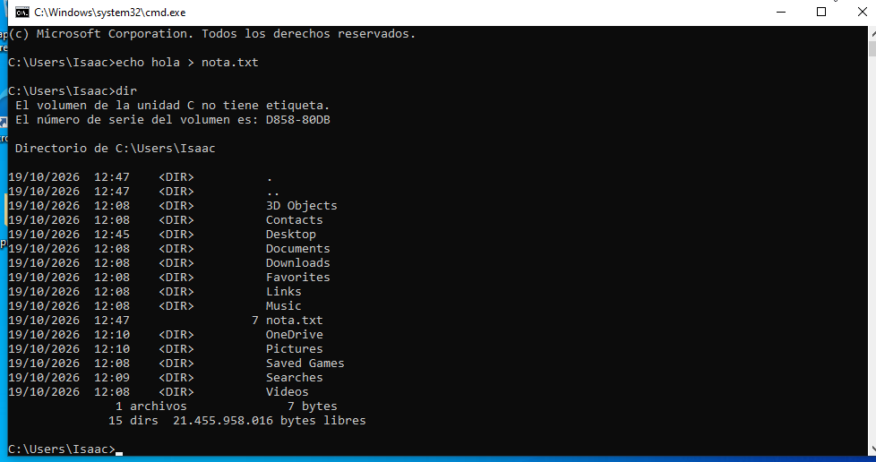
-
Còpia de seguretat de fitxer:
Dupliquem el fitxer mitjançant copy nota.txt copia.txt i utilitzem dir per validar la còpia.
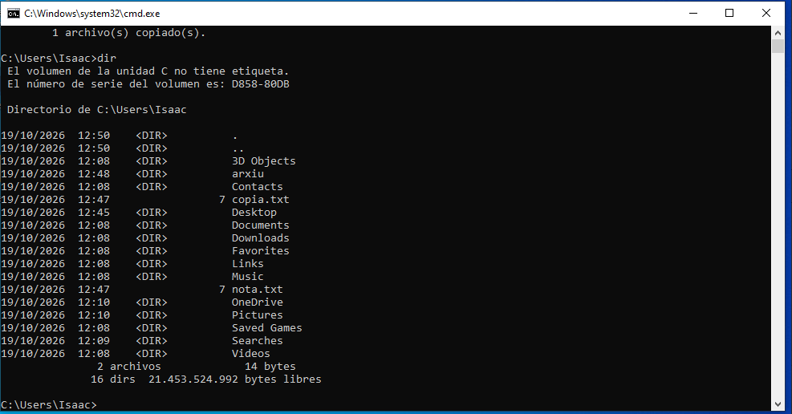
-
Moure fitxers a subcarpetes:
Creem el subdirectori mkdir arxiu i movem el fitxer duplicat amb move copia.txt arxiu.
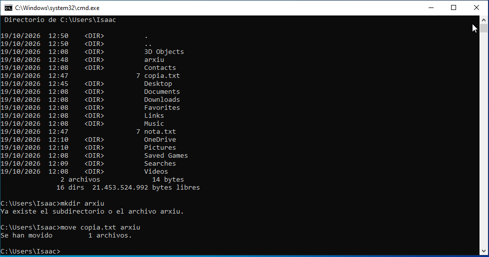
-
Canvi de nom de fitxers i carpetes:
Canviem els noms del fitxer original i del directori amb ren nota.txt notes.txt i ren arxiu backup.
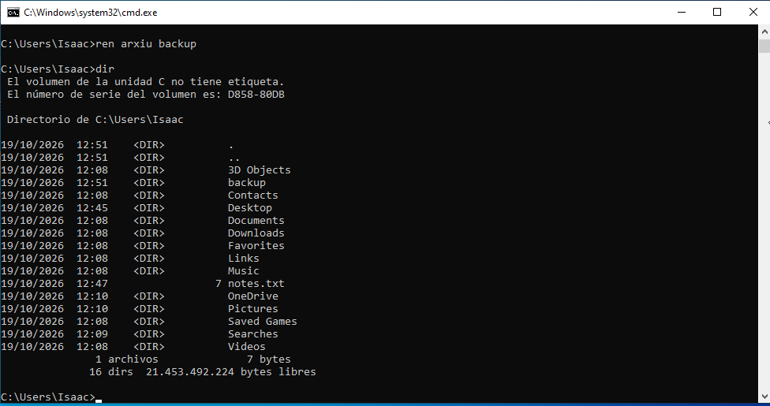
-
Navegació interna:
Accedim a la carpeta amb cd backup, llistem el contingut amb dir i retornem amb cd ...
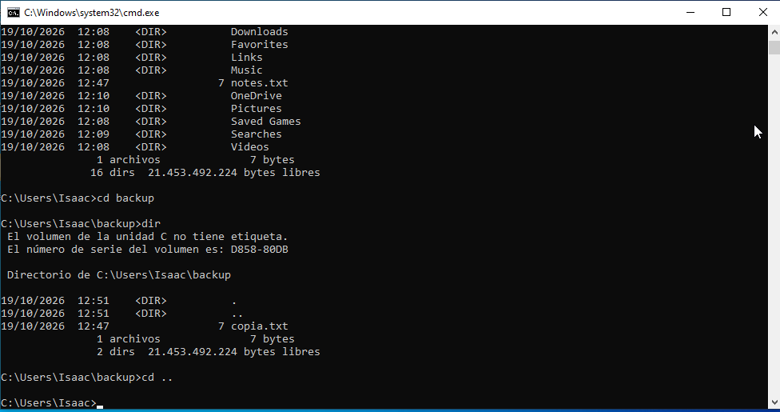
-
Visualització de l'estructura en arbre:
Mostrem la jerarquia completa de fitxers i directori mitjançant la comanda tree /f.
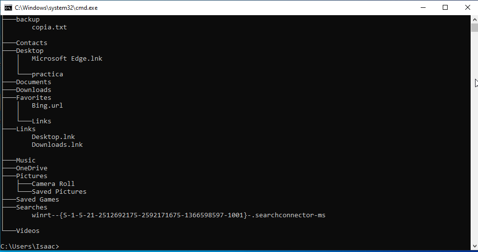
-
Eliminació de fitxers:
Esborrem el fitxer amb del notes.txt i comprovem que ja no existeix amb dir.
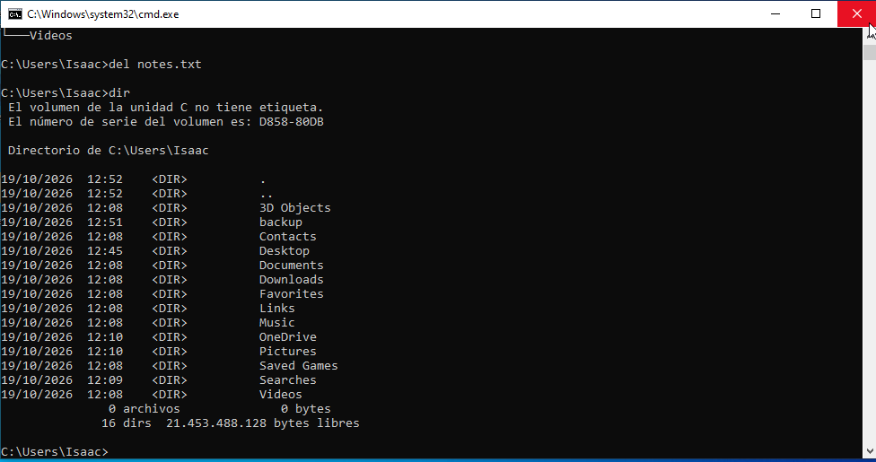
↑ Tornar a l'índex
4. Aplicacions i punts de restauració
Un punt de restauració guarda l'estat del sistema per poder tornar a un moment funcional si es produeix un error. En aquest apartat es comprova el funcionament de la restauració instal·lant i eliminant l'aplicació Google Chrome.
Creació del punt de restauració
S'activa la protecció del sistema a la unitat principal C: i es crea manualment un punt de restauració anomenat Abans de Chrome.
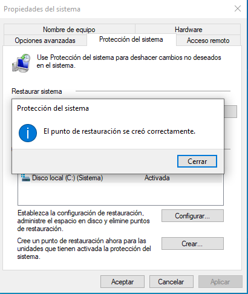
Instal·lació de programari
Es descarrega l'instal·lador oficial de Google Chrome des del navegador, s'executa la instal·lació i s'obre l'aplicació correctament.
Avaluació de programes afectats
S'obre l'assistent de restauració, es tria el punt creat prèviament i es prem Cerca programes afectats. Es comprova que Google Chrome apareix a la llista d'aplicacions que s'eliminaran.
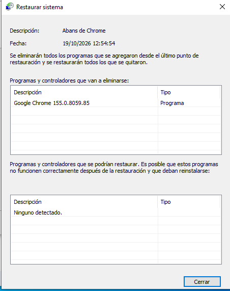
Execució i verificació de la restauració
Es confirma el procés de restauració del sistema. Després del reinici automàtic, es comprova que Google Chrome ha estat completament eliminat mentre que els fitxers de l'usuari es mantenen intactes.
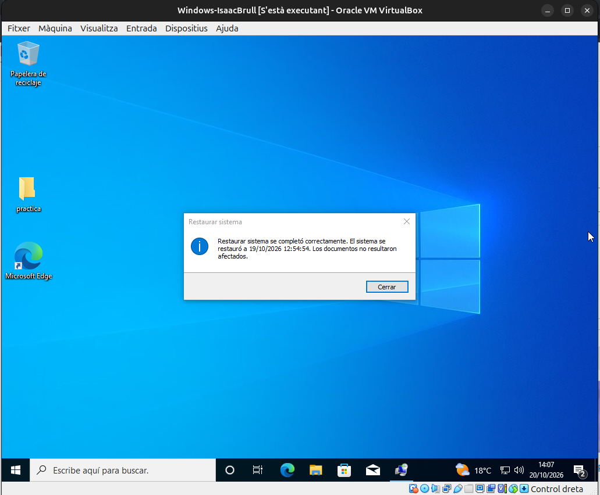
↑ Tornar a l'índex
5. Xarxa
En aquest apartat s'analitza el comportament de la connectivitat TCP/IP i la resolució de noms DNS realitzant proves amb diferents modes d'adaptador de xarxa.
Prova 1: Adaptador en mode NAT
Amb l'adaptador en NAT, s'executa ipconfig per consultar la IP assignada i es comprova la connectivitat tant a un domini (ping google.com) com a una IP externa (ping 8.8.8.8).
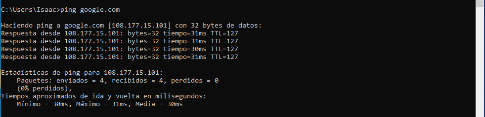
Prova 2: Cable de xarxa desconnectat
A VirtualBox se desmarca l'opció Connecta el cable. En repetir els dos pings, el sistema mostra un error d'impossibilitat de connexió per manca de medi físic.
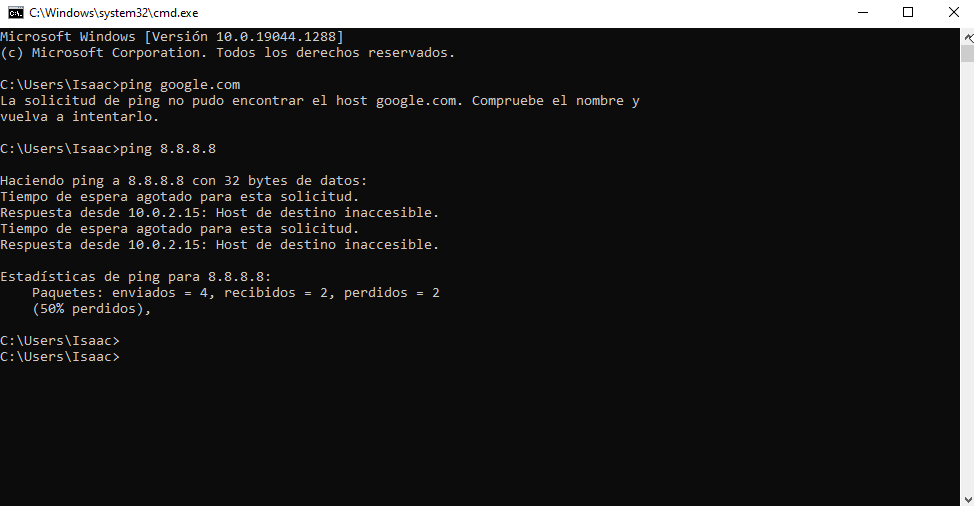
Prova 3: Adaptador en mode Adaptador pont
Es torna a connectar el cable i es canvia el mode a Adaptador pont. S'executa de nou ipconfig observant que l'equip rep una IP del mateix rang que la xarxa física real, i es confirma que els dos pings tornen a funcionar.
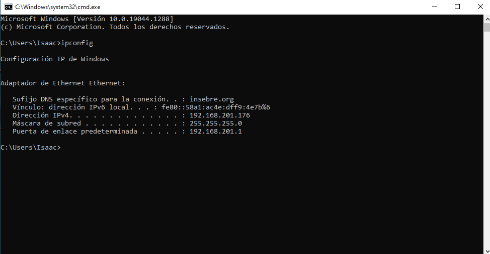
Prova 4: Configuració de DNS manual erroni
S'assigna manualment la IP 1.2.3.4 com a servidor DNS primari. En repetir les proves, ping 8.8.8.8 funciona (connexió per IP directa) però ping google.com falla, demostrant que el servei de resolució de noms no està operatiu. Finalment es torna a restablir el DNS automàtic.
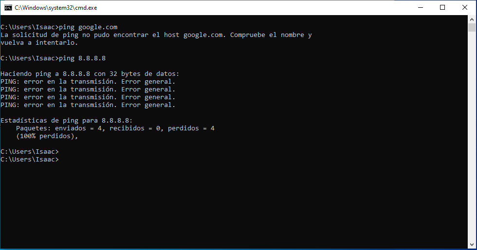
↑ Tornar a l'índex